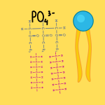
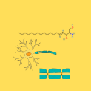
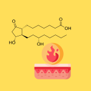

Score: 0 / 0
Phospholipids, Phosphatids, & Other Fat Derivatives
Phospholipid Structure
Phospholipids are the primary structural component of
cell membranes, consisting of a
glycerol
backbone attached to two fatty acids and a phosphate group.

The structure creates an
amphipathic
molecule with a
hydrophilic
head and
hydrophobic
tails.
Phosphatidic Acid and Derivatives
Phosphatidic acid
is the simplest phospholipid, consisting of glycerol, two fatty acids, and
a phosphate group without additional head group modifications.
Phosphatids participate in
signal transduction
pathways.
Cardiolipin
is a unique phospholipid found primarily in
mitochondrial
membranes and contains four fatty acid chains.
Sphingolipids
Sphingolipids
are based on a sphingosine backbone rather than glycerol.

Sphingomyelin
is an important component of myelin sheaths and contains a phosphocholine
head group.
Gangliosides
are complex sphingolipids necessary for nerve function.
Cholesterol and Steroids
Cholesterol
is a steroid that modulates membrane fluidity and serves as a precursor
for steroid hormones.
The
steroid ring
system provides structural rigidity.
Cholesterol derivatives include
bile acids
for fat digestion,
cortisol for
stress response,
testosterone, a male reproductive hormone, and
estrogen, a
female reproductive hormone.
Other Fat Derivatives
Prostaglandins
are involved in inflammation, pain signaling, and regulation of blood flow
and platelet aggregation.
